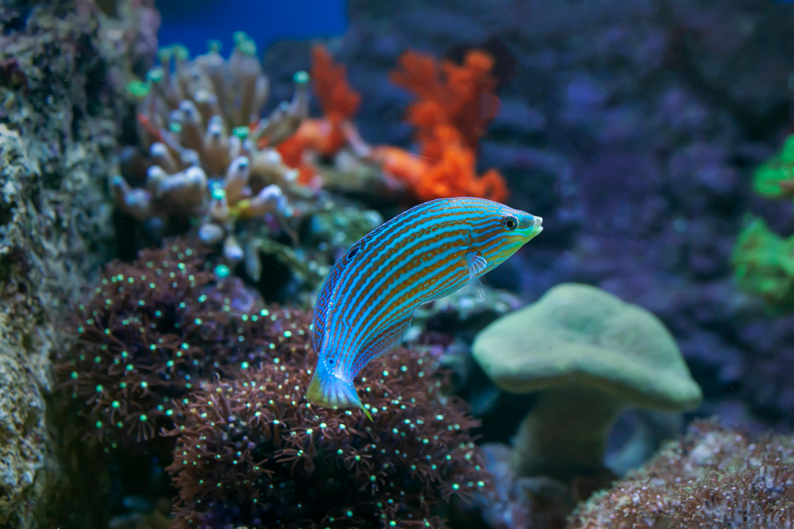
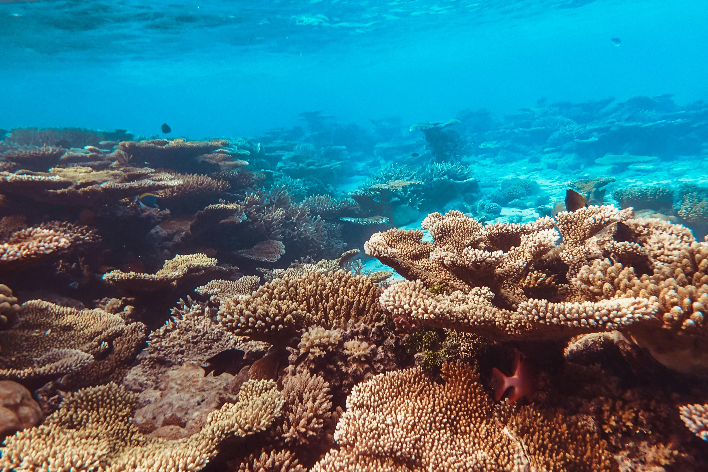
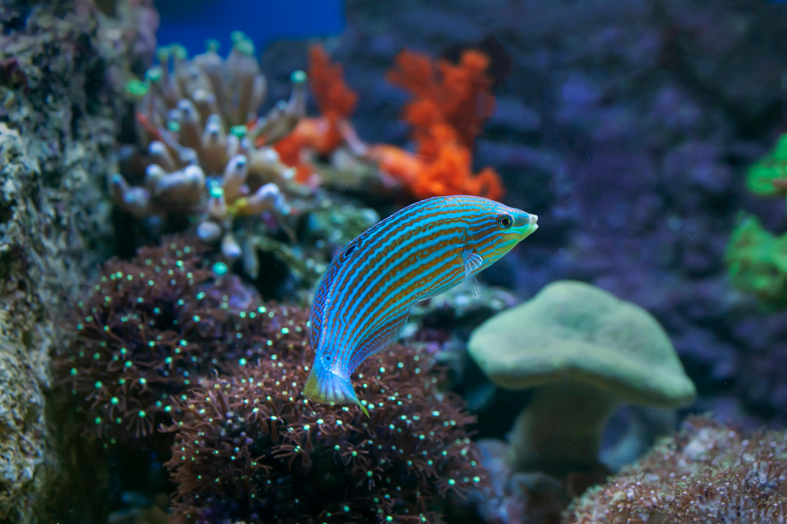
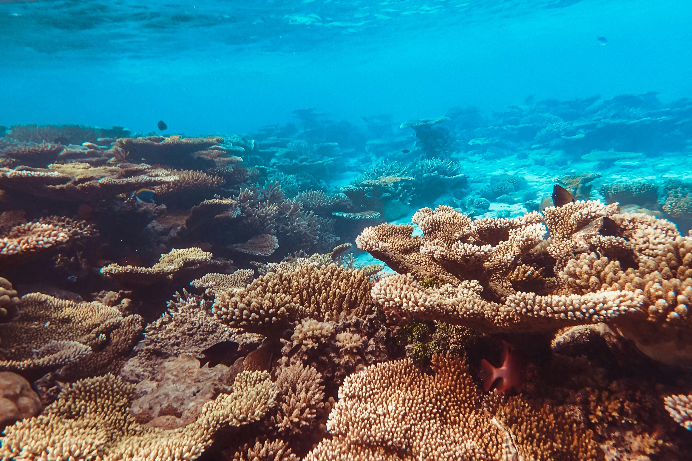

Projetos em destaque
Proteção das Desovas
Monitoramento de ninhos, soltura de filhotes e educação da comunidade.
Educação Ambiental
Palestras, teatro e ações em escolas e praças para sensibilizar crianças, jovens e adultos.
Limpeza de Praias
Mutirões que removem lixo das areias e conscientizam os banhistas.
Voluntariado
Quer fazer a diferença? Junte-se ao nosso time de voluntários e participe dos projetos em campo!
Quero ser voluntárioDoe e ajude a preservar
Sua doação nos ajuda a manter as ações e ampliar nosso impacto. Qualquer valor é muito importante!
Doe agora